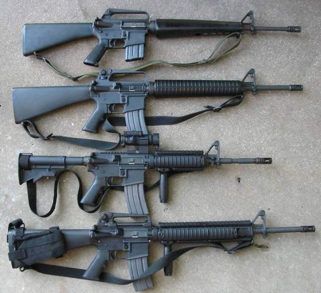
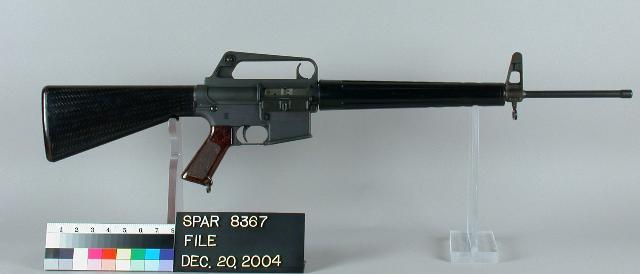

The M16 Family of Service Rifles

As far back as 1928, the US Army conducted tests at Aberdeen Proving Grounds and recommended that the US military switch to a smaller size bullet than the one currently in service, the .30-06. (pronounced as: "thirty-aught-six") These recommendations were ignored until shortly after World War II and the US military started to look for a single replacement to its assortment of infantry weapons such as the M1 Garand, the M1 and M2 Carbines, the M1918 Browning Automatic Rifle, the M3 "Grease Gun" and the Thompson Submachine Gun, all in service at the end of the war. Again, ignoring the call for a smaller bullet, the US Army began tests using a new round, the 7.62 mm NATO. Armalite, an American firearms manufacturer entered a prototype weapon into consideration called the AR-10, standing for Armalite Rifle, Model 10.
Close to the end of 1956, they sent the rifles to the US Army's Springfield Armory for testing. It was incredibly lightweight for a rifle at the time, coming in a 6.85 pounds while empty, as it was made of forged aluminum alloy upper and lower receivers. The Springfield Armory reports came back with high marks, some even saying that it was the best lightweight automatic rifle ever tested at the Armory. Despite this reaction, another rifle was chosen and entered service at the start of the Vietnam War. Battlefield reports indicated that this rifle was uncontrollable when fired on automatic and soldiers could not carry enough of the large and heavy ammunition to maintain superiority over the opponent’s weapon, the AK-47. A replacement was needed. This need gave eventual rise to the scaled down AR-10, the AR-15, chambered in 5.56-millimeter ammunition.

The M16
The original M16 service rifle was officially designated as: Rifle, Caliber 5.56 mm, M16. It first entered military service in 1964 and was deployed inside of one year for service during the Vietnam War. There are historic records of several complaints of frequent jams and malfunctions. The reasons for the issues that these soldiers faced were two-fold.
First the M16 family uses a "direct impingement system" (illustrated below) to move the moving parts of the rifle. This system uses exhaust gases from the bullet being fired to push the bolt to the rear, which ejects the spent shell, re-cocks the rifle, and loads a new bullet into the chamber where it is ready to be fired. This shoots a bunch of carbon and gunpowder residue back into the working parts of the rifle. The tolerances, or spaces between parts, of the first generations of M16 are pretty tight so any buildup in those spaces will slow the working of the rifle and cause malfunctions.
The second problem was these rifles had been issued without cleaning kits or cleaning instructions, so the debris would build, and the weapon would malfunction.